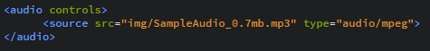
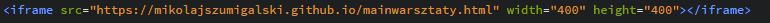
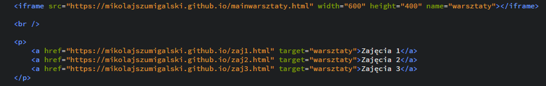
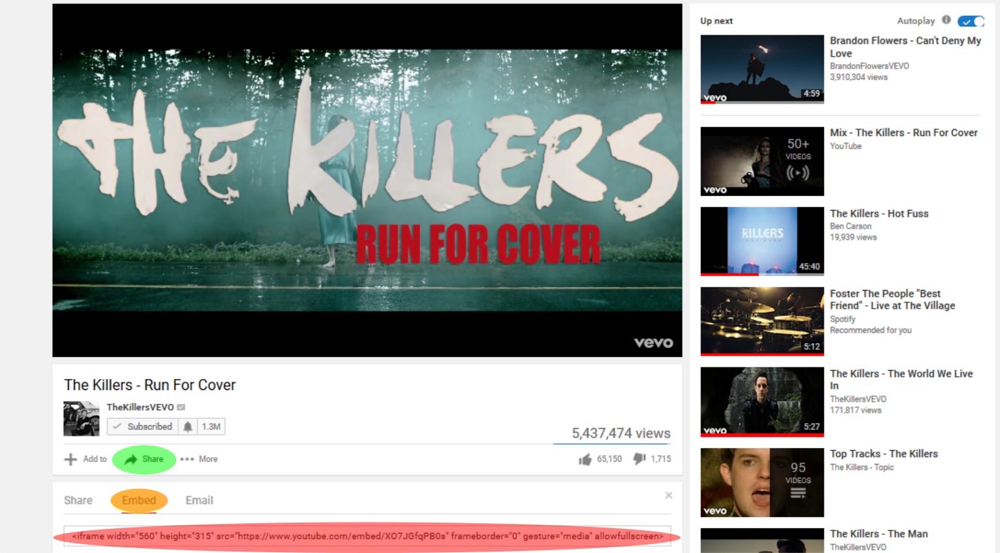
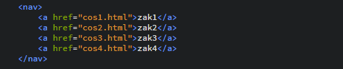

WARSZTATY WEBOWE Mikołaj Szumigalski
Powrót
Zajęcia 4
Link do pobrania prezentacji z zajęć nr 4: Prezentacja 4
1. Dodawanie obrazów na stronę
Za pomocą znacznika img możemy dodać obrazek na stronę. Wymaganym do tego atrybutem jest src (source) w którym musimy podać ścieżkę do naszego obrazka. Jeśli obrazek jest w tym samym katalogu co nasz plik html, wystarczy podać samą nazwę obrazka, jeśli nie podajemy pełną ścieżkę. Możemy również linkować obrazki z internetu. Wystarczy podać w tym miejscu link do niego.

1.1 Przydatne atrybuty znacznika img
Width i height
Z obrazkiem na stronie możemy zrobić kilka przydatnych rzeczy. Możemy ustalić jego wysokość i szerokość (atrybuty kolejno width i height). Ustalenie jednego z tych atrybutów sprawi, że automatycznie drugi przeskaluje się tak, aby stosunek wysokości obrazka do szerokości był zawsze taki sam. Dopiero ustalenie jednocześnie wysokości i szerokości zaburzy tą skalę i obrazek się zniekształci

Alt
Atrybut alt to tekst alternatywny, który wyświetla się zamiast obrazka na stronie. Warto w tym miejscu krótko napisać co obrazek przedstawia. Jest to nie tylko przydatne gdy np. obrazek jest źle podlinkowany, czy gdy przypadkowo go usuniemy z folderu, ale również może pomagać niewidomym którzy za pomocą specjalnych programów odczytują właśnie atrybut alt przy przeglądaniu stron z obrazkami.
Usemap
Atrybut wykorzystujący ciekawy znacznik map. Za jego pomocą możemy podzielić obrazek na obszary, z których każdy jest osobnym linkiem. Obszar może mieć kształt czworokąta, lub okręgu. Oprócz obrazka poniżej świetny przykład można znaleźć tutaj . Atrybut shape wyznacza kształt naszego pola (rect - czworokąt, circle - okrąg). Dodatkowo pole zajmowane przez każdy z "wycinków" określamy atrybutem coords . Przy czworokącie atrybut posiada cztery wartości - pierwsze dwie to koordynaty lewego górnego wierzchołka, a pozostałe to koordynaty prawego dolnego. Przy okręgu wartości są 3 - pierwsze dwie to koordynaty środka okręgu, a trzecia to jego promień.
 Oczywiście obrazek przedstawia tylko hipotetyczne pola które po kliknięciu byłyby odnośnikami.
Oczywiście obrazek przedstawia tylko hipotetyczne pola które po kliknięciu byłyby odnośnikami.
2. Grupowanie elementów
Na poprzednich zajęciach poznaliśmy takie znaczniki jak nav , article, czy p . Jak mówiłem służą do grupowania tekstu po to aby móc go później stylować. Takich znaczników i atrybutów, które się do tego przydają jest więcej i dziś poznamy kilka z nich.
2.1 Atrybuty ID i Class
Te atrybuty są szególnymi, ponieważ możemy je nadać praktycznie prawie wszystkim znacznikom. Ich wartość ustalamy sami, powiniem być to jakiś wyraz najlepiej. Do czego służy taki atrybut? Głównie do stylowania elementu. Różnica jest taka, że może być w dokumencie tylko jeden znacznik o danej wartości atrybutu przy atrybucie id zaś przy atrybucie class może być kilka znaczników o tej samej wartości tego atrybutu

2.2 Elementy liniowe i blokowe
Bardzo ważna kwestia o której warto pamętać przy pisaniu kodu. Przypatrzmy się podanemu przykładowi:

Na samym początku warto przypomnieć, że użyty w pliku html Enter nie będzie egzekwowany w widoku witryny. Widać to na przykładzie:

Wracając co wcześniejszego przykładu zróćmy uwagę na układ naszych elementów. Mamy po 3 elementy zawarte w konkretny znacznik i ich układ na stronie się różni. Znacznik p przesówa następny element do nowej linii z odstępem, znacznik div podobnie jak p, ale bez odstępu, a elementy w znacznikach span i a wyświetlają się koło siebie.
Elementy wyświetlające się koło siebie nazywamy elementami liniowymi (bo wyświetlają się w 1 linii). Elementy, które wyświetlają się w osobnych liniach nazywamy blokowymi
Ćwiczenie 1
Które ze znaczników, które już poznaliśmy mogą być uznane za blokowe?
--
-
A które za liniowe?
--
-
2.3 Znaczniki div i span
W przykładzie o el. blokowych i liniowych pojawiły się 2 nowe znaczniki - div i span . Do czego służą? Mają do siebie bardzo podobne znaczenie, są do... wszystkiego. I do niczego tak naprawdę. Gdy chcemy naszą treść wrzucić do jakiegoś znacznika i ostylować, ale nie mamy pomysłu jakiego użyć, wtedy używamy właśnie ich. To typowe elementy, których zadaniem jest pogrupowanie elementów, a my nadajemy im atrybut class, lub id w celu ostylowania. Różnią się jedynie tym, że div jest el. blokowym, a span liniowym (co ciekawe, za pomocą stylów, można sprawić, że div będzie el. liniowym, a span blokowym! tylko po co...)
2.4 Znaki specjalne
Zapewne wielu z Was wie czym jest kodowanie znaków w komputerze (wspomniałem o tym na poprzednich zajęciach). W HTML'u oprócz znaków z klawiatury możemy użyć też tzw. znaków specjalnych. Do takowych należą np. Δ Σ ♣ © . Jak je tworzymy? Są na to 3 sposoby:
- &nazwaznaku; zaczynamy od & i kończymy na ;, w środku nazwa znaku
- &#liczbadziesiętna; zamiast nazwy znaku podajemy jego kod dziesiętny
- &#xliczbadziesiętna; zamiast nazwy znaku podajemy jego kod szesnastkowy
Co ciekawe kody które wprowadzamy są kodami HTML'a czyli bez względu na to czy korzystamy z kodowania UTF-8 czy innego zawsze będą się wyświetlać te same znaki. Tabele z symbolami możecie znaleźć tutaj. Trochę skromniejszą wersję z opisem po polsku możecie znaleźć tu
3 Dodawanie filmów do strony
Ciężko sobie wyobrazić dzisiejszy internet bez filmów. Jak możemy łatwo dodać film na stronę? Za pomocą znacznika video. Znacznik ten posiada kilka przydatnych atrybutów:
- width i height używamy tak jak w obrazkach do ustalenia szerokości i wysokości ekranika
-autoplay filmik odpala się sam bez ingerencji użytkownika
-loop filmik jest zapętlony
-muted filmik jest wyciszony
-poster="ścieżka do miniaturki" możemy filmikowi ustalić miniaturkę
-controls dodaje kontrolki dzięki którym użytkownik może film przewijać, ustalać dźwięk, pauzować, odtwarzać, fullscreen itd.
Wewnątrz znacznika video umieszczamy znacznik source wewnątrz którego mamy 2 atrybuty: src="ścieżka do filmu" gdzie podajemy ścieżkę do filmu, oraz type="typ video" gdzie dostępnymi typami filmów są: video/mp4, video/ogg, video/webm .
Do poćwiczenia wrzucania filmów polecam np. tą stronkę gdzie można ściągnąc pliki video do testowania.
4 Dodawanie muzyki na stronę
Dodawanie muzyki jest bardzo podobne do filmów, znacznik video zastępujemy znacznikiem audio, który również posiada atrybuty: autoplay, controls, loop, muted. Podobnie jak przy filmach wewnątrz znacznika audio musimy umieścić znacznik source z atrybutami src i type. Muzyka obsługuje 3 formaty zapisu dźwięku: audio/mpeg (w tym pliki mp3), audio/ogg, audio/wav. W poniższym przykładzie również skorzystałem z tej samej strony co przy filmach do pobrania przykłdowego dźwięku (brzmi jak szum, lub zakłócenia ale chyba taki ma być)
5 Ramki
Czasami może zajść taka potrzeba, że chcemy na naszej stronie umieścić nie tylko odnośnik do innej strony, ale nawet... inną stronę. Można to jak najbardziej uczynić za pomocą znacznika iframe. Wystarczy podobniej jak przy obrazku użyć atrybutu src="" gdzie podajemy link do strony. Tu również możemy ustalić wielkośc naszego okienka na którym wyświetli się strona za pomocą atrbutów width i height.
Co ciekawe możemy potraktować taką ramkę jak "galerię" stron internetowych. O co chodzi? Na przykładzie będzie to lepiej widać:
Jak widzimy przy znaczniku iframe pojawił się nowy atrybut name. Ma on podobne zadanie do atrybutu id, mianowicie używamy go by wyróżnić go spośród pozostałych znaczników i móc na nim wykonywać różne operacje. Na przykładzie jego cel widać gdy przypatrzymy się już nam znanemu znacznikowi a. Jak wiemy jest to znacznik do linkowania stron. Tym razem jednak posiada on dodatkowy atrybut target, w którym wybieramy miejsce wyświetlania się naszego linku. W tym wypadku ma to być element o nazwie "warsztaty", którym jest nasz iframe. W ten sposób możemy klikając na odnośniki zmieniać zawartość naszego iframe.
5.1 Znacznik iframe, a Youtube
Wracając do wrzucania filmów na stronę nie sposób nie wspomnieć o najpopularniejszym miejscu w którym możemy znaleźć niezliczoną ilość filmków - czyli o Youtube. Możemy mieć potrzebę wrzucenia jakiegoś filmu właśnie stamtąd i rodzi się pytanie jak to uczynić, skoro znacznik video odnosi się do plików mp3 itd. Jest to naprawdę proste.
Pod każdym filmikiem na YT znajdziemy element share, gdy w niego klikniemy wyświetli nam się kilka nowy elementów m. in. element embed. Po kliknięciu na niego wyświetli nam się eleganki iframe z naszym materiałem z YT. Wystarczy go skopiować na stronę i gotowe. Ma on kilka atrybutów które możemy edytować jeśli jest taka potrzeba np. width i height.
Praca domowa
Proszę o utworzenie katalogu o nazwie PRDOM3, w nim stwórzcie plik o nazwie prdom3.html , w którym musi się znaleźć:
- obraz z atrbutem alt i określoną przez Was wysokością i szerokością
- dźwięk w dowolnym formacie z atrybutem controls
- klip video o dowolnym formacie z ustaloną wysokością, szerokością i atrybutami autoplay i loop
- 6 wybranych symboli specjalnych (można np. w stopce umieścić znaczek © i swoje imie i nazwisko :D )
- iframe z ustalonymi wymiarami (link do dowolnej - niepornograficznej - strony wybranej przez Was )
- drugi iframe z atrybutem name i dodatkowymi elementami a, które zmieniają jego treść (przynajmniej 3 takie elementy a)
Oczywiście pliki video czy muzykę też proszę umieścić w tym katalogu i wrzucić to wszystko na Git'a
Oprócz tego zaczynamy drugą część naszego projektu, do którego mamy już szablony. Chciałbym aby każdy przygotował 1 plik główny o nazwie index.html, który będzie naszą główną stroną i umieścił na nim treść, obrazki, filmy, dźwięki i inne rzeczy o których się uczyliśmy a uważa, że na jego stronie powinny się znaleźć. Na każdej stronie powinny być elementy a zawarte w elemencie nav, które potraktujemy jako menu. Oczywiście tworzymy do każdego elementu na zakładce osobny plik HTML. Na tą część macie 2 tygodnie. Do projektu proszę utworzyć osobny katalog o nazwie "Projekt HTML" i tam umieszczać wszystkie pliki z nim związane. Pod spodem zamieszczam przykładowe menu strony
